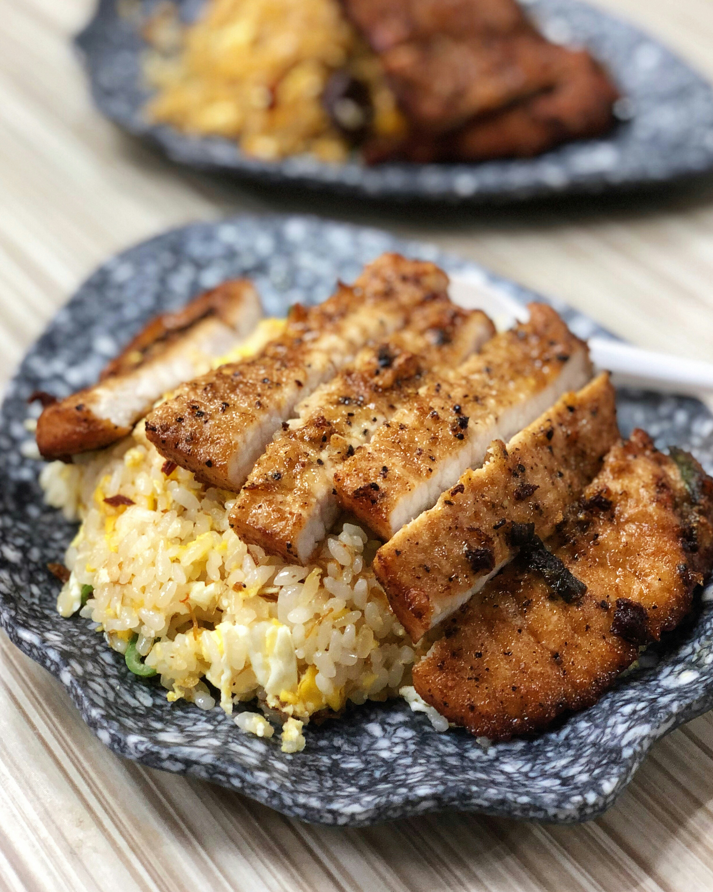

Queso Chicken and Rice

Ingredients
- 1 tablespoon olive oil
- 1 1/2 pounds skinless, boneless chicken breasts or thighs, cut into 1 1/2-inch pieces
- 1 teaspoon garlic powder, or to taste
- Salt and freshly ground black pepper, to taste
- 1/2 yellow or white onion, finely chopped
- 1 tablespoon butter
- 1 1/2 cups uncooked long-grain white rice
- 1 (1-ounce) packet taco seasoning
- 2 3/4 cups water, or as needed
- 1 cup prepared queso dip
- Green onions, pico de gallo, guacamole, cilantro, or jalapeños, for topping (optional)
Prep Time: 10 mins
Cook Time: 25 mins
Total Time: 35 mins
Servings: 4
Instructions
- Season chicken with garlic powder, salt, and pepper.
- Heat olive oil in a large skillet over medium-high heat.
- Add chicken and cook undisturbed until browned on one side, about 2 minutes.
- Flip the chicken and cook until lightly browned on the other side, about 2 minutes.
- Add onion and cook, stirring occasionally, until it begins to soften.
- Add butter and let it melt.
- Add rice and cook, stirring, until it is coated and lightly toasted, about 1 minute.
- Stir in taco seasoning until well combined, about 30 seconds.
- Add water and stir well, scraping any browned bits from the bottom of the pan.
- Bring to a boil, stir once more, then reduce heat to a simmer.
- Cover and cook until the liquid has been absorbed, about 20 minutes.
- Warm queso in a microwave-safe bowl, stirring every 30 seconds until heated through.
- Top the chicken and rice with queso and serve with desired toppings.